Project Setup and Build
Make a new Project in Xcode that is storyboard based.
Step 1: Click the info tab in the Project Settings.

Step 2: Hover over and click the minus button on the values in the image.
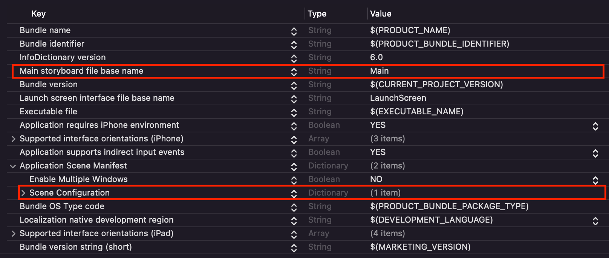
Step 3: Click the build settings tab.
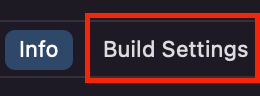
Step 4: Scroll down to the iOS Deployment Target setting in Deployment header and click the dropdown menu.
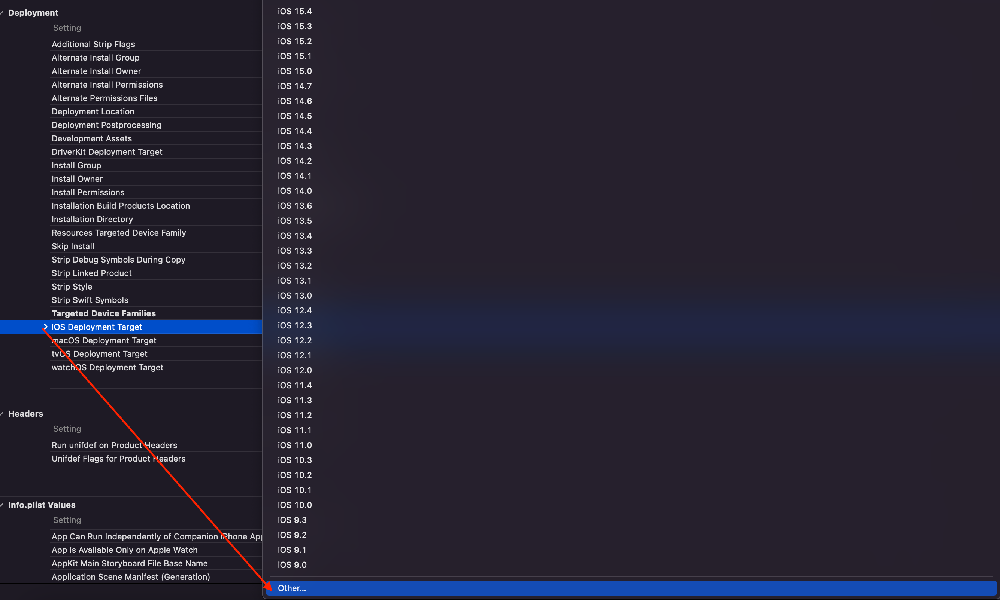
Step 5: Click scroll down inside that dropdown and click “other”, and type in “7.0”.
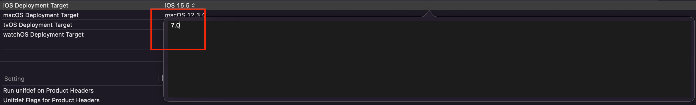
Step 6: Right click and select delete on the two highlighted files.
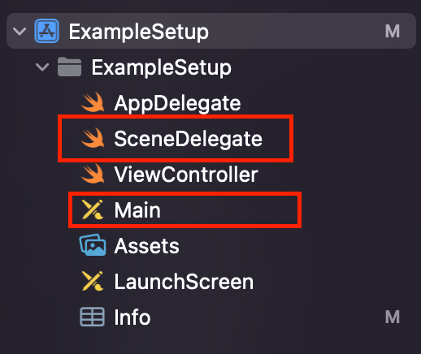
Step 7: Open the LaunchScreen storyboard.
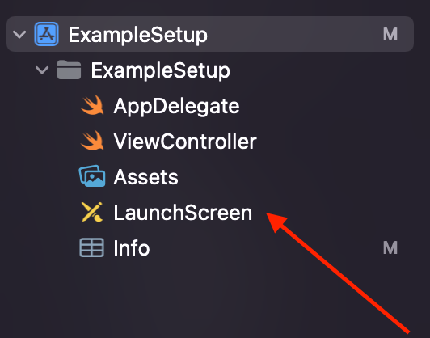
Step 8: Click “View Controller Scene”.
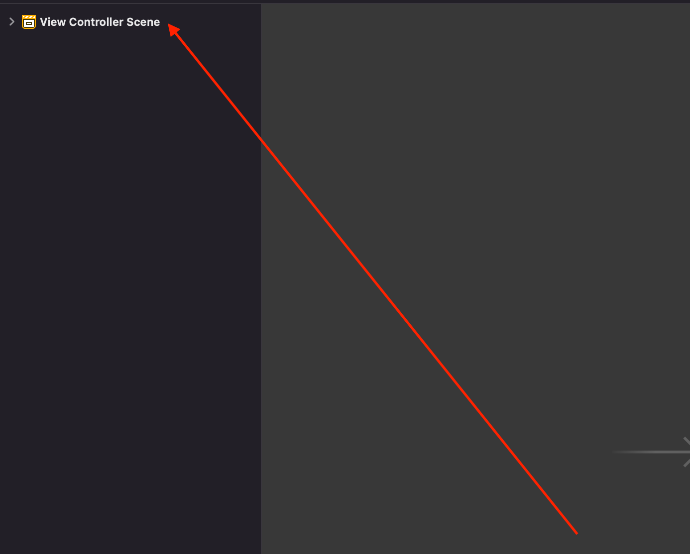
Step 9: On the right, click the page option.
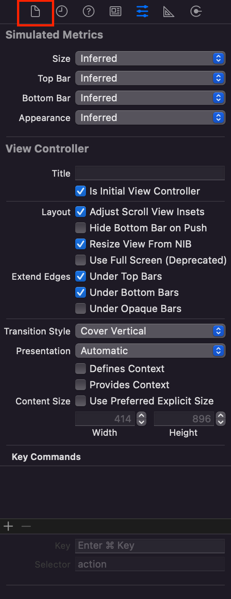
Step 10: Uncheck the “Use Safe Area Layout Guides” option.
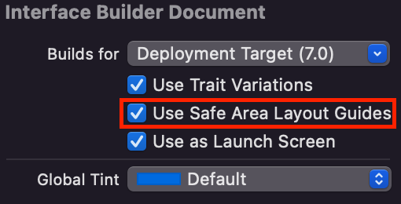
Step 11: Go to the AppDelegate file.
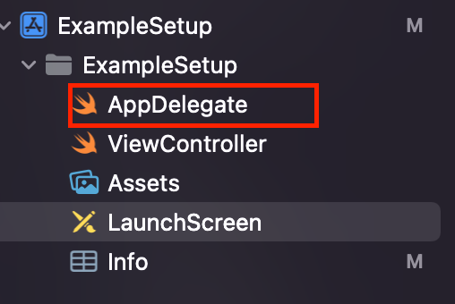
Step 12: Cmd A to select all, then Cmd V to paste the following code:
import UIKit
@main
class AppDelegate: UIResponder, UIApplicationDelegate {
var window: UIWindow? // Needed for apps not using SceneDelegate
func application(_ application: UIApplication,
didFinishLaunchingWithOptions launchOptions: [UIApplication.LaunchOptionsKey: Any]?) -> Bool {
// Create a UIWindow manually
window = UIWindow(frame: UIScreen.main.bounds)
window?.rootViewController = ViewController() // Set initial ViewController
window?.makeKeyAndVisible()
return true
}
}
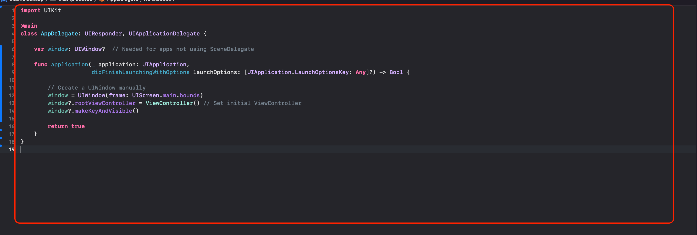